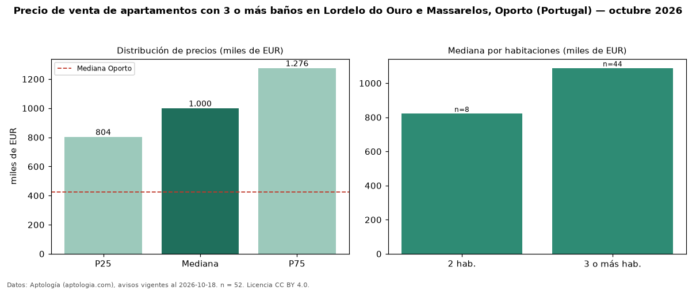

Precio de venta de apartamentos con 3 o más baños en Lordelo do Ouro e Massarelos, Oporto (Portugal) — octubre 2026
Con 52 avisos vigentes, el precio mediano de apartamentos con 3 o más baños en venta en Lordelo do Ouro e Massarelos, Oporto (Portugal) es EUR 1,00 millones. Eso es 22 % más que la mediana de todos los apartamentos en venta de Lordelo do Ouro e Massarelos (EUR 818.500, n = 86); este segmento reúne el 60 % de esos avisos. Por metro cuadrado, la mediana es EUR 6.674/m² (n = 52), 5 % por debajo del conjunto de referencia (EUR 6.995/m²). El área mediana anunciada es 168 m². El segmento con más oferta es el de 3 o más habitaciones (44 avisos, mediana EUR 1,09 millones); pasar de 2 habitaciones a 3 o más habitaciones cambia la mediana +32 %. La mediana de todos los apartamentos en venta de Oporto es EUR 425.000 (+135 % de diferencia). La mitad central de los avisos va de EUR 803.750 a EUR 1,28 millones (razón 1,6), una dispersión moderada. Datos: Aptología (aptologia.com), CC BY 4.0 — https://www.aptologia.com/pt/venda/porto/lordelo-do-ouro-e-massarelos. Archivos: PDF, CSV con las cifras y gráfica PNG.

| Avisos únicos | 52 |
|---|---|
| Percentil 25 | COP 803.750 |
| Mediana | COP 1.000.000 |
| Percentil 75 | COP 1.275.750 |
| Mediana por m² | COP 6.673 |
Fuente: avisos vigentes de portales inmobiliarios recopilados por Aptología, deduplicados (mínimo 30 avisos únicos por celda). Precios pedidos, no cerrados. Fecha: 2026-10-18.